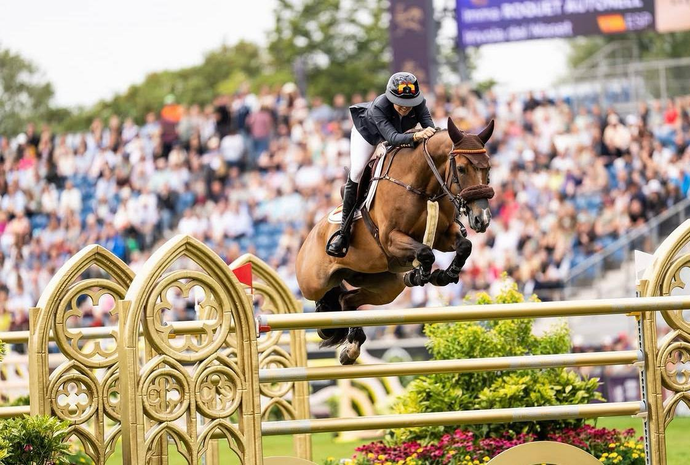

Imma Roquet cae del equipo español de Copa de Naciones en el CSIO5* de Barcelona
La amazona catalana ha renunciado a alinear a Irivola del Maset por precaución en la final de la Longines League of Nations que se disputa este fin de semana en el Real Club de Polo, según ha podido saber Hípica al Día. Roquet mantiene su presencia en el CSIO5* con Dreamer del Maset.

Imma Roquet no formará parte del equipo español en la Copa de Naciones del CSIO5* de Barcelona, según ha podido saber Hípica al Día. La amazona catalana tenía previsto competir en la prueba por equipos con Irivola del Maset, pero ha optado por reservar al caballo por precaución y renunciar así a un puesto en la final de la Longines League of Nations que se celebra este fin de semana en el Real Club de Polo.
La Copa de Naciones del CSIO Barcelona es la cita más importante del calendario internacional para los equipos de salto y reúne cada temporada a las mejores selecciones del circuito. España, como anfitriona, afronta la prueba en su feudo del Real Club de Polo, escenario histórico del concurso desde hace más de un siglo.
Pese a la baja para la prueba por equipos, Roquet sí disputará el resto del CSIO5* con Dreamer del Maset, con el que competirá en las pruebas individuales del programa internacional.
Todo sobre Longines League of Nations Final →
Por Lucía Valdeolmos